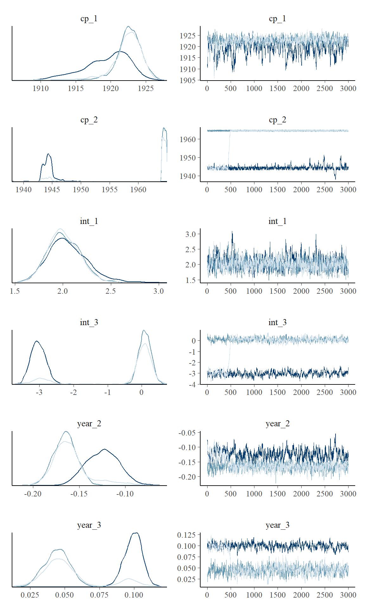

Binomial change point analysis
Jonas Kristoffer Lindeløv
2020-08-03
Source:vignettes/binomial.Rmd
binomial.Rmdmcp aims to implement Generalized Linear Models in a way that closely mimics that of brms::brm. You can set the family and link functions using the family argument.
First, let us specify a toy model with three segments:
model = list( y | trials(N) ~ 1, # constant rate ~ 0 + year, # joined changing rate ~ 1 + year # disjoined changing rate )
Simulate data
If you already have data, you can safely skip this section.
We run mcp with sample = FALSE to get what we need to simulate data.
Now we can simulate. First, let us see the model parameters.
empty$pars
## $x
## [1] "year"
##
## $y
## [1] "y"
##
## $trials
## [1] "N"
##
## $weights
## NULL
##
## $varying
## NULL
##
## $sigma
## character(0)
##
## $arma
## character(0)
##
## $reg
## [1] "cp_1" "cp_2" "int_1" "int_3" "year_2" "year_3"
##
## $population
## [1] "cp_1" "cp_2" "int_1" "int_3" "year_2" "year_3"- It takes two intercepts (
int_*), for segments 1 and 3. - It takes two slopes (
year_*), for segment 2 and 3. - It takes two change points (
cp_*) - one between each segment.
empty$simulate is now a function that can predict data given these parameters. If you are in a reasonable R editor, type empty$simulate( and press TAB to see the required arguments. I came up with some values below, including change points at \(year = 25\) and \(year = 65\). Notice that because binomial() defaults to the link function link = "logit", the intercept and slopes are on a logit scale. Briefly, this extends the narrow range of binomial rates (0-1) to an infinite logit scale from minus infinity to plus infinity. This will be important later when we set priors.
df = data.frame( year = 1901:2000, # evaluate for each of these N = sample(10:20, size = 100, replace = TRUE) # number of trials ) df$y = empty$simulate( df$year, df$N, cp_1 = 1925, cp_2 = 1965, int_1 = 2, int_3 = 0, year_2 = -0.2, year_3 = 0.05) head(df)
## year N y
## 1 1901 13 12
## 2 1902 15 13
## 3 1903 12 10
## 4 1904 11 10
## 5 1905 15 13
## 6 1906 10 8Visually:
plot(df$year, df$y)

Check parameter recovery
The next sections go into more detail, but let us quickly see if we can recover the parameters used to simulate the data.
We can use summary to see that it recovered the parameters to a pretty good precision. Again, recall that intercepts and slopes are on a logit scale.
summary(fit)
## Family: binomial(link = 'logit')
## Iterations: 9000 from 3 chains.
## Segments:
## 1: y | trials(N) ~ 1
## 2: y | trials(N) ~ 1 ~ 0 + year
## 3: y | trials(N) ~ 1 ~ 1 + year
##
## Population-level parameters:
## name match sim mean lower upper Rhat n.eff
## cp_1 OK 1925.00 1921.455 1914.918 1926.126 1.4 134
## cp_2 1965.00 1956.733 1943.330 1965.000 3.9 4
## int_1 OK 2.00 2.026 1.655 2.379 1.0 721
## int_3 OK 0.00 -1.113 -3.344 0.429 3.8 4
## year_2 -0.20 -0.150 -0.189 -0.099 2.1 40
## year_3 OK 0.05 0.066 0.028 0.109 3.2 7summary uses 95% highest density intervals (HDI) by default, but you can change it using summary(fit, width = 0.80). If you have varying effects, use ranef(fit) to see them.
Plotting the fit confirms good fit to the data, and we see the discontinuities at the two change points:
plot(fit)

These lines are just fit$simulate applied to a random draw of the posterior samples. In other words, they represent the joint distribution of the parameters. You can change the number of draws (lines) using plot(fit, lines = 50).
Notice for binomial models it defaults to plot the rate (y / N) as a function of x. The reason why is obvious when we plot on “raw” data by toggling rate:
plot(fit, rate = FALSE)

These lines are jagged because N varies from year to year. Although there is close too 100% success rate in the years 1900 - 1920, the number of trials varies, as you can see in the raw data. However, using rate = FALSE will be great when the number of trials is constant for extended periods of time, as y is more interpretable then.
Speaking of alternative visualizations, you can also plot this on the logit scale, where the linear trends are modeled:
plot(fit, scale = "linear")

Of course, these plots work with varying effects as well.
Model diagnostics and sampling options
Already in the default plot as used above, it will be obvious if there was poor convergence. A more direct assessment is to look at the posterior distributions and trace plots:
plot_pars(fit)

Convergence is perfect here as evidenced by the overlapping trace plots that look like fat caterpillars (Bayesians love fat caterpillars). Notice that the posterior distribution of change points can be quite non-normal and sometimes even bimodal. Therefore, one should be careful not to interpret the HDI as if it was normal.
plot() and plot_pars() can do a lot more than this, so check out their documentation.
Priors for binomial models
mcp uses priors to achieve a lot of it’s functionality. See how to set priors, including how to share parameters between segments and how to fix values. Here, I post a few notes about the binomial-specific default priors.
The default priors in mcp are set so that they are reasonably broad to cover most scenarios, though also specific enough to sample effectively. They are not “default” as in “canonical”. Rather, they are “default” as in “what happens if you do nothing else”. All priors are stored in fit$prior (also empty$prior). We did not specify prior above, so it ran with default priors:
cbind(fit$prior)
## [,1]
## cp_1 "dt(MINX, (MAXX - MINX) / N_CP, N_CP - 1) T(cp_0, MAXX)"
## cp_2 "dt(MINX, (MAXX - MINX) / N_CP, N_CP - 1) T(cp_1, MAXX)"
## int_1 "dnorm(0, 3)"
## int_3 "dnorm(0, 3)"
## year_2 "dnorm(0, 3 / (MAXX - MINX))"
## year_3 "dnorm(0, 3 / (MAXX - MINX))"The priors on change points are discussed extensively in the prior vignette. The priors on slopes and intercepts are normals with standard deviation of “3” logits. This corresponds to quite extreme binomial probabilities, yet not so extreme as to be totally flat. Here are visualization of priors dnorm(0, 1) (red), dnorm(0, 2) (black, mcp default), and a dnorm(0, 5) (blue) prior, and the correspondence between logits and probabilities:
inverse_logit = function(x) exp(x) / (1 + exp(x)) # Start the plot library(ggplot2) ggplot(data.frame(logits = 0), aes(x = logits)) + # Plot normal prior. Set parameters in "args" stat_function(fun=dnorm, args = list(mean=0, sd = 1), lwd=2, col="red") + stat_function(fun=dnorm, args = list(mean=0, sd = 3), lwd=2, col="black") + stat_function(fun=dnorm, args = list(mean=0, sd = 5), lwd=2, col="blue") + # Set the secondary axis scale_x_continuous(breaks = -7:7,limits = c(-7, 7), sec.axis = sec_axis(~ inverse_logit(.), name = "Probability", breaks = round(inverse_logit(seq(-7, 7, by = 2)), 3)))

Please keep in mind that when these priors combine through the model, the joint probability may be quite different.
Returning to the priors, the 3 / (MAXX - MINX) on slopes mean that this change in probability occurs over the course of the observed X.
JAGS code
Here is the JAGS code for the model used in this article.
cat(fit$jags_code)
##
## model {
##
## # Priors for population-level effects
## cp_0 = MINX # mcp helper value.
## cp_3 = MAXX # mcp helper value.
##
## cp_1 ~ dt(MINX, 1/((MAXX-MINX)/N_CP)^2, N_CP-1) T(cp_0, MAXX)
## cp_2 ~ dt(MINX, 1/((MAXX-MINX)/N_CP)^2, N_CP-1) T(cp_1, MAXX)
## int_1 ~ dnorm(0, 1/(3)^2)
## int_3 ~ dnorm(0, 1/(3)^2)
## year_2 ~ dnorm(0, 1/(3/(MAXX-MINX))^2)
## year_3 ~ dnorm(0, 1/(3/(MAXX-MINX))^2)
##
##
## # Model and likelihood
## for (i_ in 1:length(year)) {
## X_1_[i_] = min(year[i_], cp_1)
## X_2_[i_] = min(year[i_], cp_2) - cp_1
## X_3_[i_] = min(year[i_], cp_3) - cp_2
##
## # Fitted value
## y_[i_] =
##
## # Segment 1: y | trials(N) ~ 1
## (year[i_] >= cp_0) * (year[i_] < cp_2) * int_1 +
##
## # Segment 2: y | trials(N) ~ 1 ~ 0 + year
## (year[i_] >= cp_1) * (year[i_] < cp_2) * year_2 * X_2_[i_] +
##
## # Segment 3: y | trials(N) ~ 1 ~ 1 + year
## (year[i_] >= cp_2) * int_3 +
## (year[i_] >= cp_2) * year_3 * X_3_[i_]
##
## # Likelihood and log-density for family = binomial()
## y[i_] ~ dbin(ilogit(y_[i_]), N[i_])
## loglik_[i_] = logdensity.bin(y[i_], ilogit(y_[i_]), N[i_])
## }
## }